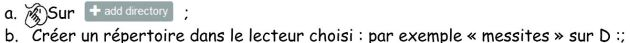
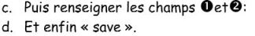
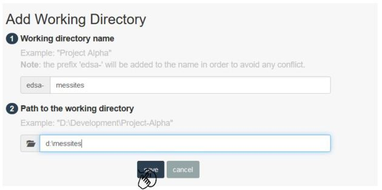
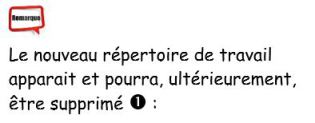
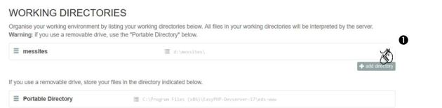
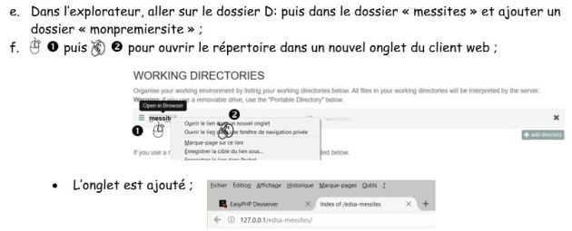
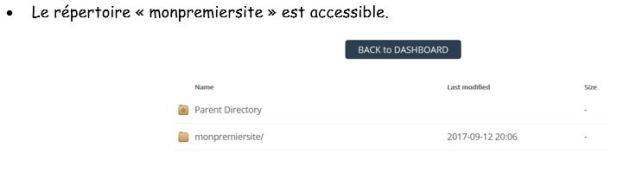
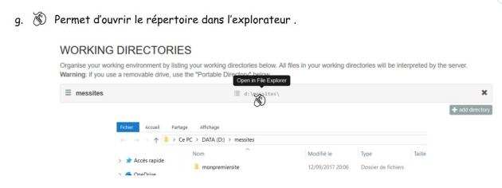

Créer un serveur local avec easyphp n.dugué/t.chaillou
contenu
menu
navigation
outils
3. Ajouter un répertoire sur un autre lecteur (conseillé)








Précédent
Suivant
Présentation
1. Installer EasyPHP :
2. Démarrer les serveurs
3. Ajouter un répertoire sur un autre lecteur (conseillé)
4. Créer la base de données avec Phpmyadmin
5. Installer Wordpress
Accueil
Module